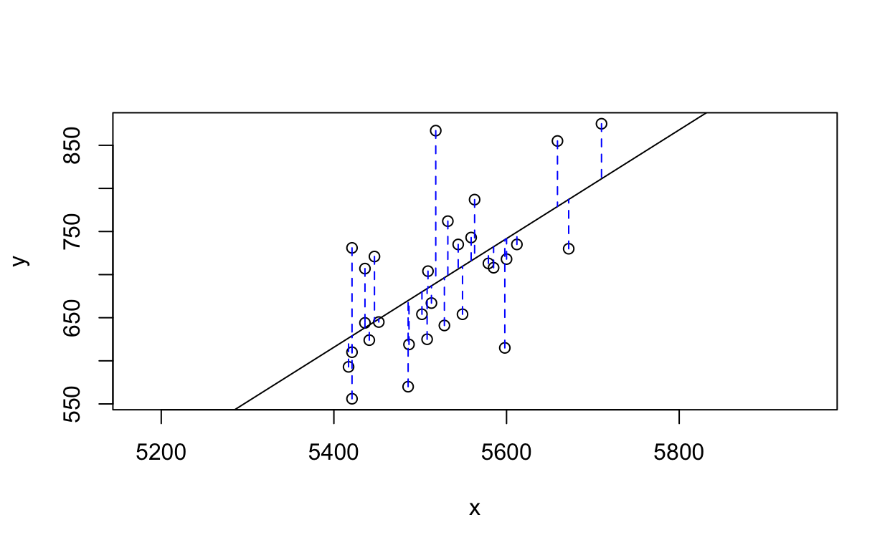
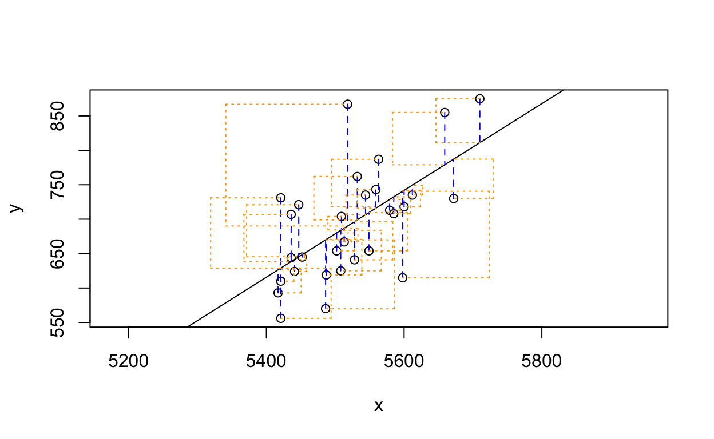
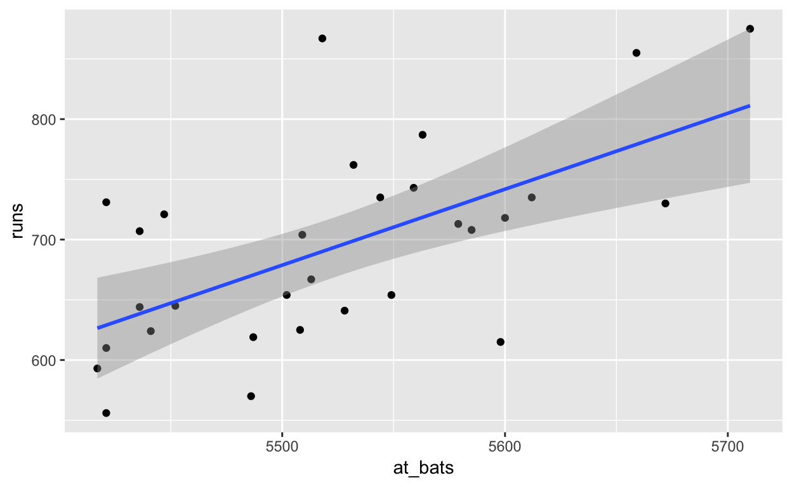

The movie Moneyball focuses on the “quest for the secret of success in baseball”. It follows a low-budget team, the Oakland Athletics, who believed that underused statistics, such as a player’s ability to get on base, betterpredict the ability to score runs than typical statistics like home runs, RBIs (runs batted in), and batting average. Obtaining players who excelled in these underused statistics turned out to be much more affordable for the team.
In this lab we’ll be looking at data from all 30 Major League Baseball teams and examining the linear relationship between runs scored in a season and a number of other player statistics. Our aim will be to summarize these relationships both graphically and numerically in order to find which variable, if any, helps us best predict a team’s runs scored in a season.
Let’s load up the data for the 2011 season.
download.file("http://www.openintro.org/stat/data/mlb11.RData", destfile = "mlb11.RData")
load("mlb11.RData")In addition to runs scored, there are seven traditionally used variables in the data set: at-bats, hits, home runs, batting average, strikeouts, stolen bases, and wins. There are also three newer variables: on-base percentage, slugging percentage, and on-base plus slugging. For the first portion of the analysis we’ll consider the seven traditional variables. At the end of the lab, you’ll work with the newer variables on your own.
What type of plot would you use to display the relationship between runs and one of the other numerical variables? Plot this relationship using the variable at_bats as the predictor. Does the relationship look linear? If you knew a team’s at_bats, would you be comfortable using a linear model to predict the number of runs?
ggplot(mlb11, aes(at_bats, runs)) + geom_point()
# the relationship might be linear, but the unexplained variation seems to be
# quite high. so we wouldn't be very comfortableIf the relationship looks linear, we can quantify the strength of the relationship with the correlation coefficient.
cor(mlb11$runs, mlb11$at_bats)## [1] 0.610627Think back to the way that we described the distribution of a single variable. Recall that we discussed characteristics such as center, spread, and shape. It’s also useful to be able to describe the relationship of two numerical variables, such as runs and at_bats above.
Looking at your plot from the previous exercise, describe the relationship between these two variables. Make sure to discuss the form, direction, and strength of the relationship as well as any unusual observations.
Just as we used the mean and standard deviation to summarize a single variable, we can summarize the relationship between these two variables by finding the line that best follows their association. Use the following interactive function to select the line that you think does the best job of going through the cloud of points.
plot_ss(x = mlb11$at_bats, y = mlb11$runs)
## Click two points to make a line.
## Call:
## lm(formula = y ~ x, data = pts)
##
## Coefficients:
## (Intercept) x
## -2789.2429 0.6305
##
## Sum of Squares: 123721.9After downloading the data in a separate RStudio session, you will also the the function plot_ss() in your working environment. Please run the above command in such a separate RStudio sesssion. After running this command, you’ll be prompted to click two points on the plot to define a line. Once you’ve done that, the line you specified will be shown in black and the residuals in blue. Note that there are 30 residuals, one for each of the 30 observations. Recall that the residuals are the difference between the observed values and the values predicted by the line:
\[ e_i = y_i - \hat{y}_i \]
The most common way to do linear regression is to select the line that minimizes the sum of squared residuals. To visualize the squared residuals, you can rerun the plot command and add the argument showSquares = TRUE.
plot_ss(x = mlb11$at_bats, y = mlb11$runs, showSquares = TRUE)
## Click two points to make a line.
## Call:
## lm(formula = y ~ x, data = pts)
##
## Coefficients:
## (Intercept) x
## -2789.2429 0.6305
##
## Sum of Squares: 123721.9Note that the output from the plot_ss function provides you with the slope and intercept of your line as well as the sum of squares.
Using plot_ss, choose a line that does a good job of minimizing the sum of squares. Run the function several times. What was the smallest sum of squares that you got? How does it compare to your neighbors?
It is rather cumbersome to try to get the correct least squares line, i.e. the line that minimizes the sum of squared residuals, through trial and error. Instead we can use the lm function in R to fit the linear model (a.k.a. regression line).
m1 <- lm(runs ~ at_bats, data = mlb11)The first argument in the function lm is a formula that takes the form y ~ x. Here it can be read that we want to make a linear model of runs as a function of at_bats. The second argument specifies that R should look in the mlb11 data frame to find the runs and at_bats variables.
The output of lm is an object that contains all of the information we need about the linear model that was just fit. We can access this information using the summary function.
summary(m1)##
## Call:
## lm(formula = runs ~ at_bats, data = mlb11)
##
## Residuals:
## Min 1Q Median 3Q Max
## -125.58 -47.05 -16.59 54.40 176.87
##
## Coefficients:
## Estimate Std. Error t value Pr(>|t|)
## (Intercept) -2789.2429 853.6957 -3.267 0.002871 **
## at_bats 0.6305 0.1545 4.080 0.000339 ***
## ---
## Signif. codes: 0 '***' 0.001 '**' 0.01 '*' 0.05 '.' 0.1 ' ' 1
##
## Residual standard error: 66.47 on 28 degrees of freedom
## Multiple R-squared: 0.3729, Adjusted R-squared: 0.3505
## F-statistic: 16.65 on 1 and 28 DF, p-value: 0.0003388Let’s consider this output piece by piece. First, the formula used to describe the model is shown at the top. After the formula you find the five-number summary of the residuals. The “Coefficients” table shown next is key; its first column displays the linear model’s y-intercept and the coefficient of at_bats. With this table, we can write down the least squares regression line for the linear model:
\[ \widehat{y} = -2789.2429 + 0.6305 \cdot \text{at\_bats} \]
One last piece of information we will discuss from the summary output is the Multiple R-squared, or more simply, \(R^2\). The \(R^2\) value represents the proportion of variability in the response variable that is explained by the explanatory variable. For this model, 37.3% of the variability in runs is explained by at-bats.
Fit a new model that uses homeruns to predict runs. Using the estimates from the R output, write the equation of the regression line. What does the slope tell us in the context of the relationship between success of a team and its home runs?
mod_hr <- lm(runs ~ homeruns, data = mlb11)
summary(mod_hr)
# fitted value = 415.239 + 1.835 * homeruns
#
# the model predicts that on average a team scores twice for each additional homerunLet’s create a scatterplot with the least squares line laid on top.
ggplot(mlb11, aes(at_bats, runs)) + geom_point() +
geom_smooth(method = "lm")
The function geom_smooth() plots a line based on the slope and intercept, which are determined by lm(). This is due to the fact that we choose the smoothing method equal to lm. This line can be used to predict \(y\) at any value of \(x\). When predictions are made for values of \(x\) that are beyond the range of the observed data, it is referred to as extrapolation and is not usually recommended. However, predictions made within the range of the data are more reliable. They’re also used to compute the residuals.
If a team manager saw the least squares regression line and not the actual data, how many runs would he or she predict for a team with 5,579 at-bats? Is this an overestimate or an underestimate, and by how much? In other words, what is the residual for this prediction?
# prediction
predict(m1, newdata = data.frame(at_bats = 5579))
# observation(s) with at_bats=5578
mlb11 %>%
filter(at_bats == 5579) %>%
select(runs)
# residual
mlb11$residuals <- residuals(m1)
mlb11 %>%
filter(at_bats == 5579) %>%
select(residuals)
# due to the negative residual, the model overestimates the runs for at_bats=5579Choose another traditional variable from mlb11 that you think might be a good predictor of runs. Produce a scatterplot of the two variables and fit a linear model. At a glance, does there seem to be a linear relationship?
How does this relationship compare to the relationship between runs and at_bats? Use the R\(^2\) values from the two model summaries to compare. Does your variable seem to predict runs better than at_bats? How can you tell?
Now that you can summarize the linear relationship between two variables, investigate the relationships between runs and each of the other five traditional variables. Which variable best predicts runs? Support your conclusion using the graphical and numerical methods we’ve discussed (for the sake of conciseness, only include output for the best variable, not all five).
Now examine the three newer variables. These are the statistics used by the author of Moneyball to predict a teams success. In general, are they more or less effective at predicting runs that the old variables? Explain using appropriate graphical and numerical evidence. Of all ten variables we’ve analyzed, which seems to be the best predictor of runs? Using the limited (or not so limited) information you know about these baseball statistics, does your result make sense?
This tutorial is released under a Creative Commons Attribution-ShareAlike 3.0 Unported. This lab was adapted from an OpenIntro R Lab by Andrew Bray and Mine Çetinkaya-Rundel.